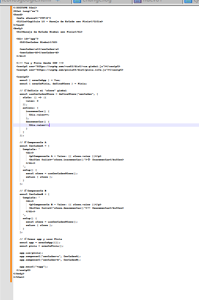

Manejo de Estado con Pinia en Vue.js
Objetivo: Aprender a utilizar Pinia, la librería oficial para manejar el estado global en aplicaciones Vue.js.
¿Qué es el manejo de estado?
Cuando la app es pequeña, puedes pasar datos con props o eventos ($emit). Pero cuando tienes muchos componentes que comparten información (por ejemplo, usuario, carrito, configuración), necesitas un almacén centralizado de datos. Pinia es el reemplazo moderno de Vuex. Permite guardar y acceder a datos globales desde cualquier componente, con una sintaxis simple y reactiva. Ventajas:
- Sencillo de usar.
- Compatible con Vue 3.
- Reactivo como data().
- Permite persistir datos y usar acciones (funciones).
Para ilustrar prueba el siguiente ejemplo práctico crea un archivo llamado pinia.html y prueba con el siguiente contenido:
Siguiente